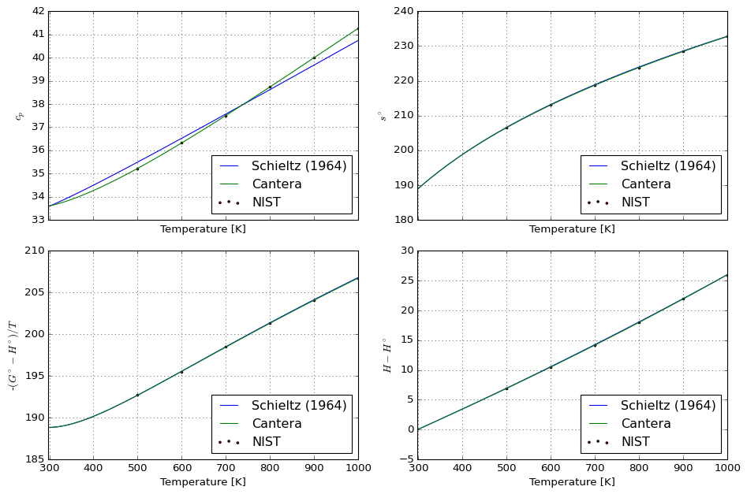
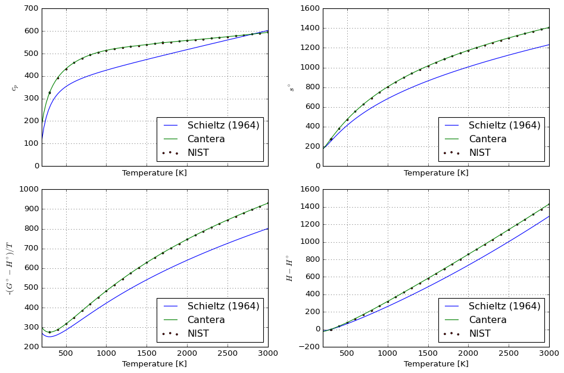
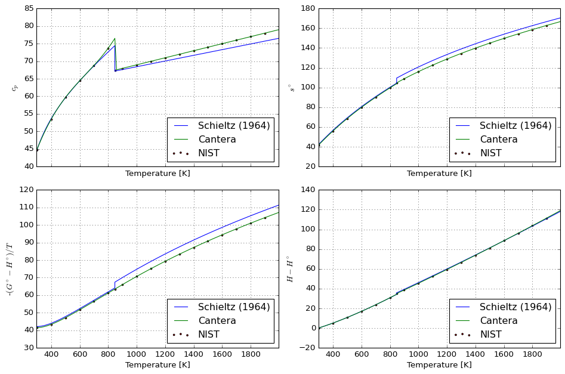

Converting data to Shomate format#
The goal of this tutorial is to illustrate how to transform other thermodynamic data formats (here the closely related Maier-Kelly) into Shomate formalist for use with Cantera. This is especially useful for composing larger databases with standardized properties.
We start by importing the required tools:
from io import StringIO
from numpy.typing import NDArray
from majordome import MajordomePlot
import cantera as ct
import majordome as mj
import numpy as np
import pandas as pd
import yaml
Species data#
The following provides a compilation of data from Schieltz (1964); please notice that at the time of publication customary units where \(\text{cal}\,\text{mol}^{-1}\), so when loading data we will need to multipy data by \(4.184\:\text{J}\,\text{cal}^{-1}\).
data = """\
- name: KAOLINITE
composition: {Al: 2, Si: 2, O : 9, H : 4}
data: [57.47, 35.30e-03, -7.87e+05, -964940.0, 40.50]
- name: METAKAOLIN
composition: {Al: 2, Si: 2, O: 7}
data: [54.85, 8.80e-03, -3.48e+05, -767500.0, 32.78]
- name: AL6SI2O13_MULLITE
composition: {Al: 6, Si: 2, O: 13}
data: [84.22, 20.00e-03, -25.00e+05, -1804000.0, 60.00]
- name: AL2O3_GAMMA
composition: {Al: 2, O: 3}
data: [16.37, 11.10e-03, 0.0, -395000.0, 12.20]
- name: SIO2_QUARTZ_ALPHA
composition: {Si: 1, O: 2}
data: [11.22, 8.20e-03, -2.70e+05, -209900.0, 10.06]
- name: SIO2_QUARTZ_BETA
composition: {Si: 1, O: 2}
data: [14.41, 1.94e-03, 0.0, -209900.0, 10.06]
- name: SIO2_GLASS
composition: {Si: 1, O: 2}
data: [13.38, 3.68e-03, -3.45e+05, -202000.0, 10.06]
- name: SIO2_CRISTOBALITE_ALPHA
composition: {Si: 1, O: 2}
data: [4.28, 21.06e-03, 0.0, -209500.0, 10.06]
- name: SIO2_CRISTOBALITE_BETA
composition: {Si: 1, O: 2}
data: [14.40, 2.04e-03, 0.0, -209500.0, 10.06]
- name: SIO2_TRIDYMITE_ALPHA
composition: {Si: 1, O: 2}
data: [3.27, 24.80e-03, 0.0, -209400.0, 10.06]
- name: SIO2_TRIDYMITE_BETA
composition: {Si: 1, O: 2}
data: [13.64, 2.64e-03, 0.0, -209400.0, 10.06]
- name: H2O_LIQUID
composition: {H: 2, O: 1}
data: [18.03, 0.0, 0.0, -68320.0, 16.72]
- name: H2O_STEAM
composition: {H: 2, O: 1}
data: [7.17, 2.56e-03, 0.08e+05, -57800.0, 45.13]
"""
NIST validation data#
Data sources:
nist_water = """\
500.0 35.22 206.5 192.7 6.92
600.0 36.32 213.1 195.5 10.50
700.0 37.50 218.7 198.5 14.19
800.0 38.74 223.8 201.3 18.00
900.0 40.00 228.5 204.1 21.94
1000.0 41.27 232.7 206.7 26.00
"""
nist_mullite = """\
298.0 325.0 274.1 275.1 -0.30
300.0 326.9 276.3 275.1 0.35
400.0 392.6 380.3 288.6 36.66
500.0 431.8 472.4 316.4 78.02
600.0 458.8 553.7 349.3 122.6
700.0 478.5 625.9 383.7 169.5
800.0 493.5 690.9 418.1 218.2
900.0 505.1 749.7 451.8 268.1
1000.0 514.0 803.4 484.3 319.1
1100.0 521.0 852.7 515.6 370.9
1200.0 526.6 898.3 545.6 423.2
1300.0 531.2 940.6 574.4 476.1
1400.0 535.3 980.1 601.9 529.5
1500.0 539.4 1017.0 628.4 583.2
1600.0 543.8 1052.0 653.8 637.4
1700.0 548.9 1085.0 678.2 692.0
1700.0 547.7 1085.0 678.1 692.0
1800.0 551.3 1117.0 701.6 747.0
1900.0 554.6 1147.0 724.3 802.3
2000.0 557.9 1175.0 746.1 857.9
2100.0 561.1 1202.0 767.2 913.8
2200.0 564.4 1229.0 787.6 970.1
2300.0 567.7 1254.0 807.3 1027.0
2400.0 571.1 1278.0 826.4 1084.0
2500.0 574.6 1301.0 844.9 1141.0
2600.0 578.3 1324.0 862.9 1199.0
2700.0 582.0 1346.0 880.4 1257.0
2800.0 585.9 1367.0 897.4 1315.0
2900.0 589.9 1388.0 914.0 1374.0
3000.0 593.9 1408.0 930.1 1433.0
"""
nist_quartz = """\
298.0 44.57 41.44 41.47 -0.01
300.0 44.77 41.74 41.47 0.08
400.0 53.43 55.87 43.34 5.01
500.0 59.64 68.50 47.13 10.68
600.0 64.42 79.81 51.65 16.89
700.0 68.77 90.06 56.42 23.55
800.0 73.70 99.56 61.22 30.67
847.0 67.42 104.7 63.47 34.93
900.0 67.95 108.8 66.02 38.51
1000.0 68.95 116.0 70.66 45.36
1100.0 69.96 122.6 75.09 52.30
1200.0 70.96 128.8 79.31 59.35
1300.0 71.96 134.5 83.34 66.50
1400.0 72.97 139.9 87.18 73.74
1500.0 73.97 144.9 90.87 81.09
1600.0 74.98 149.7 94.40 88.54
1700.0 75.98 154.3 97.79 96.08
1800.0 76.99 158.7 101.0 103.7
1900.0 77.99 162.9 104.2 111.5
"""
Data model#
class SchieltzSpecies:
""" Simple species representation to load data from Schieltz, 1964. """
__slots__ = ("_name", "_mass", "_coef", "_h298", "_s298")
def __init__(self, data: dict, Tref: float = 298.15) -> None:
self._name = data["name"]
self._mass = self.molecular_weight(data["composition"])
# Store coefficients in J/mol units:
self._coef = 4.184 * np.array(data["data"])
# Store reference state quantities for integrations:
self._h298 = self._h(Tref)
self._s298 = self._s(Tref)
def __repr__(self) -> str:
""" Unique representation of species. """
return f"<Species {self._name}>"
@staticmethod
def molecular_weight(composition: dict[str, int]) -> float:
""" Evaluate molecular weight of species [kg/kmol]. """
return sum(n * ct.Element(e).weight for e, n in composition.items())
def _c(self, T: float) -> float:
""" Evaluation by definition (from coefficients). """
a, b, c = self._coef[:3]
return a + b * T + c / T**2
def _h(self, T: float) -> float:
""" Evaluation by definition (dH = dT*c_p*). """
a, b, c = self._coef[:3]
return a * T + (b / 2) * T**2 - c / T
def _s(self, T: float) -> float:
""" Evaluation by definition (dS = dT*c_p/T. """
a, b, c = self._coef[:3]
return a * np.log(T) + b * T - c / (2 * T**2)
def specific_heat(self, T: float) -> float:
""" Maier-Kelley specific heat [J/(mol.K)]. """
return self._c(T)
def specific_enthalpy(self, T: float) -> float:
""" Maier-Kelley specific enthalpy [J/mol]. """
return self._h(T) - self._h298
def specific_entropy(self, T: float) -> float:
""" Maier-Kelley specific entropy [J/(mol.K)]. """
return self.reference_specific_entropy + self._s(T) - self._s298
@property
def reference_specific_enthalpy(self) -> float:
""" Reference state formation enthalpy [J/mol]. """
return self._coef[-2]
@property
def reference_specific_entropy(self) -> float:
""" Reference state formation entropy [J/(mol.K)]. """
return self._coef[-1]
def tabulate(self, T: NDArray[np.float64]) -> pd.DataFrame:
""" Generate a table for comparison with NIST Web-book of Chemistry. """
c = self.specific_heat(T)
s = self.specific_entropy(T)
h = self.specific_enthalpy(T)
g = -(h - T * s) / T
data = np.vstack((T, c, s, g, h / 1000)).T
columns = pd.MultiIndex.from_tuples([
("T", "K"),
("Cp", "J/(mol.K)"),
("S°", "J/(mol.K)"),
("-(G°-H°298.15)/T", "J/(mol.K)"),
("H°-H°298.15", "kJ/mol")
])
return pd.DataFrame(data, columns=columns)
class CanteraSpecies:
""" Simple wrapper to compute vectorized properties of species. """
__slots__ = ("_species", "_c", "_h", "_s", "_trng")
def __init__(self, species: ct.thermo.Species) -> None:
self._species = species
h298 = species.thermo.h(298.15) / 1000
# s298 = species.thermo.s(298.15) / 1000
# XXX: notice that properties are in *kmol* basis in Cantera
# https://cantera.org/stable/python/thermo.html#cantera.SpeciesThermo
self._c = np.vectorize(lambda t: 0.001 * species.thermo.cp(t))
self._h = np.vectorize(lambda t: 0.001 * species.thermo.h(t) - h298)
self._s = np.vectorize(lambda t: 0.001 * species.thermo.s(t))
self._trng = species.input_data["thermo"]["temperature-ranges"]
def __repr__(self) -> str:
""" Unique representation of species. """
return repr(self._species)
def specific_heat(self, T: float) -> float:
""" Cantera species specific heat [J/(mol.K)]. """
return self._c(T)
def specific_enthalpy(self, T: float) -> float:
""" Cantera species specific enthalpy [J/mol]. """
return self._h(T)
def specific_entropy(self, T: float) -> float:
""" Cantera species specific entropy [J/(mol.K)]. """
return self._s(T)
@property
def temperature_ranges(self) -> list[float]:
""" Temperature ranges for data set [K]. """
return self._trng
config_plot = {
"shape": (2, 2),
"size": (12, 8),
"xlabel": "Temperature [K]",
"ylabel": [
r"$c_p$",
r"$s^\circ$",
r"-$(G^\circ-H^\circ)/T$",
r"$H-H^\circ$"
]
}
@MajordomePlot.new(**config_plot)
def plot_properties(spec_ref, truth, df, plot=None):
data = df.iloc[:, :].to_numpy().T
_, ax = plot.subplots()
T = data[0]
c = spec_ref.specific_heat(T)
h = spec_ref.specific_enthalpy(T)
s = spec_ref.specific_entropy(T)
# h is already h-h298!
g = -(h - T * s) / T
T_nist = truth[0]
c_nist = truth[1]
s_nist = truth[2]
g_nist = truth[3]
h_nist = truth[4]
ax[0].plot(T, data[1], label="Schieltz (1964)")
ax[0].plot(T, c, label="Cantera")
ax[0].scatter(T_nist, c_nist, s=5, c="r", label="NIST")
ax[1].plot(T, data[2], label="Schieltz (1964)")
ax[1].plot(T, s, label="Cantera")
ax[1].scatter(T_nist, s_nist, s=5, c="r", label="NIST")
ax[2].plot(T, data[3], label="Schieltz (1964)")
ax[2].plot(T, g, label="Cantera")
ax[2].scatter(T_nist, g_nist, s=5, c="r", label="NIST")
ax[3].plot(T, data[4], label="Schieltz (1964)")
ax[3].plot(T, h / 1000, label="Cantera")
ax[3].scatter(T_nist, h_nist, s=5, c="r", label="NIST")
ax[0].legend(loc=4)
ax[1].legend(loc=4)
ax[2].legend(loc=4)
ax[3].legend(loc=4)
ax[0].set_xlim(mj.bounds(T))
Below we load both databases in a format convenient for the computations that follow:
database = {d["name"]: SchieltzSpecies(d) for d in yaml.safe_load(data)}
species = {s.name: CanteraSpecies(s) for s in ct.Species.list_from_file("materials.yaml", "species")}
# database, species
Validation of calculator#
Water gas#
spec_ref = species["H2O_GAS"]
T_mullite = np.linspace(298, 1000, 100)
df_calc = database["H2O_STEAM"].tabulate(T_mullite)
df_nist = pd.read_csv(StringIO(nist_water), sep=r"\s+", header=None)
plot = plot_properties(spec_ref, df_nist, df_calc)

Mullite#
spec_ref = species["AL6SI2O13_MULLITE"]
T_mullite = np.linspace(*mj.bounds(spec_ref.temperature_ranges), 100)
df_calc = database["AL6SI2O13_MULLITE"].tabulate(T_mullite)
df_nist = pd.read_csv(StringIO(nist_mullite), sep=r"\s+", header=None)
plot = plot_properties(spec_ref, df_nist, df_calc)

Quartz#
def tabulate_sio2(T_ranges):
""" Compose a single table with data for SiO2 (Quartz). """
sio2_alpha = database["SIO2_QUARTZ_ALPHA"]
sio2_beta = database["SIO2_QUARTZ_BETA"]
# XXX: in Shomate formalism, ranges as [Tmin; Tmax), so use
# a slightly smaller value for jump temperature in T_alpha.
T_alpha = np.linspace(298, T_ranges[1]-0.001, 100)
T_beta = np.linspace(*T_ranges[1:], 100)
df_alpha = sio2_alpha.tabulate(T_alpha)
df_beta = sio2_beta.tabulate(T_beta)
return pd.concat([df_alpha, df_beta])
spec_ref = species["SIO2_QUARTZ"]
df_calc = tabulate_sio2(spec_ref.temperature_ranges)
df_nist = pd.read_csv(StringIO(nist_quartz), sep=r"\s+", header=None)
plot = plot_properties(spec_ref, df_nist, df_calc)
